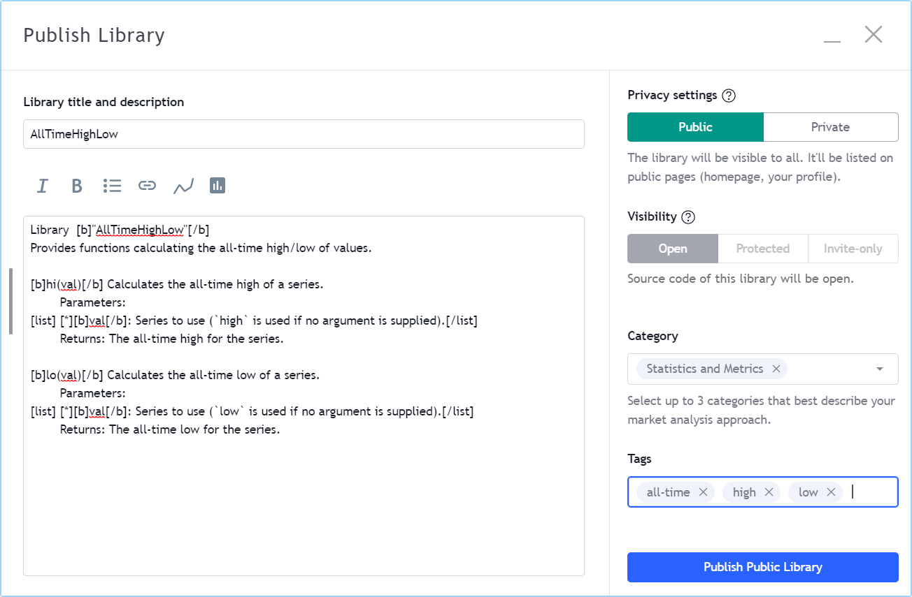
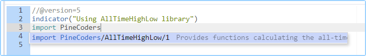

Libraries¶
Introduction¶
Pine Script® libraries are publications containing functions that can be reused in indicators, strategies, or in other libraries. They are useful to define frequently-used functions so their source code does not have to be included in every script where they are needed.
A library must be published (privately or publicly) before it can be used in another script. All libraries are published open-source. Public scripts can only use public libraries and they must be open-source. Private scripts or personal scripts saved in the Pine Script® Editor can use public or private libraries. A library can use other libraries, or even previous versions of itself.
Library programmers should be familiar with Pine Script®’s typing nomenclature, scopes and user-defined functions. If you need to brush up on forms and types, see the User Manual’s page on the Type system. For more information on user-defined functions and scopes, see the User-defined functions page.
You can browse the library scripts published publicly by members in TradingView’s Community Scripts.
Creating a library¶
A library is a special kind of script that begins with the library() declaration statement, rather than indicator() or strategy(). A library contains exportable function definitions, which constitute the only visible part of the library when it is used by another script. Libraries can also use other Pine Script® code in their global scope, like a normal indicator. This code will typically serve to demonstrate how to use the library’s functions.
A library script has the following structure, where one or more exportable functions must be defined:
//@version=5
// @description <library_description>
library(title, overlay)
<script_code>
// @function <function_description>
// @param <parameter> <parameter_description>
// @returns <return_value_description>
export <function_name>([simple/series] <parameter_type> <parameter_name> [= <default_value>] [, ...]) =>
<function_code>
<script_code>
Note that:
- The
// @description,// @function,// @paramand// @returnscompiler annotations are optional but we highly recommend you use them. They serve a double purpose: document the library’s code and populate the default library description which authors can use when publishing the library. - The export keyword is mandatory.
- <parameter_type> is mandatory, contrary to user-defined function parameter definitions in indicators or strategies, which are typeless.
- <script_code> can be any code you would normally use in an indicator, including inputs or plots.
This is an example library:
//@version=5
// @description Provides functions calculating the all-time high/low of values.
library("AllTimeHighLow", true)
// @function Calculates the all-time high of a series.
// @param val Series to use (`high` is used if no argument is supplied).
// @returns The all-time high for the series.
export hi(float val = high) =>
var float ath = val
ath := math.max(ath, val)
// @function Calculates the all-time low of a series.
// @param val Series to use (`low` is used if no argument is supplied).
// @returns The all-time low for the series.
export lo(float val = low) =>
var float atl = val
atl := math.min(atl, val)
plot(hi())
plot(lo())
Library functions¶
Function definitions in libraries are slightly different than those of user-defined functions in indicators and strategies. There are constraints as to what can be included in the body of library functions.
In library function signatures (their first line):
- The export keyword is mandatory.
- The type of argument expected for each parameter must be explicitly mentioned.
- A simple or series form modifier can restrict the allowable forms of arguments (the next section explains their use).
These are the constraints imposed on library functions:
- They cannot use variables from the library’s global scope unless they are of “const” form. This means you cannot use global variables initialized from script inputs, for example, or globally declared arrays.
request.*()calls are not allowed.input.*()calls are not allowed.plot*(),fill()andbgcolor()calls are not allowed.
Library functions always return a result that is either of “simple” or “series” form.
You cannot use them to calculate values where “const” or “input” forms are required,
as is the case with some built-in functions.
For example, a library function cannot be used to calculate an argument for the show_last parameter in a
plot() call, because an “input int” argument is required for show_last.
Argument form control¶
The form of arguments supplied in calls to library functions is autodetected based on how the argument is used inside the function. If the argument can be used in “series” form, it is. If it cannot, an attempt is made with the “simple” type form. This explains why this code:
export myEma(int x) =>
ta.ema(close, x)
will work when called using myCustomLibrary.myEma(20),
even though ta.ema()’s length parameter
requires a “simple int” argument.
When the Pine Script® compiler detects that a “series” length cannot be used with
ta.ema(),
it tries the “simple” form, which in this case is allowed.
While library functions cannot return results of “const” or “input” forms, they can be written to produce a result of “simple” form.
This makes them useful in more contexts than functions returning a result of “series” form,
because some built-in functions do not allow “series” arguments.
For example, request.security()
requires a “simple string” for its symbol parameter.
If we wrote a library function to assemble the argument to symbol in the following way,
the function’s result would not work because it is of “series” form:
export makeTickerid(string prefix, string ticker) =>
prefix + ":" + ticker
However, by restricting the form of its parameters to “simple”, we could force the function to yield a “simple” result. We can achieve this by prefixing the parameters’ type with the simple keyword:
export makeTickerid(simple string prefix, simple string ticker) =>
prefix + ":" + ticker
Note that for the function to return a “simple” result, no “series” values can be used in its calculation; otherwise the result will be of “series” form.
One can also use the series keyword to prefix the type of a library function parameter. However, because arguments are by default cast to the “series” form, using the series modifier is redundant; it exists more for completeness.
User-defined types and objects¶
You can export user-defined types (UDTs) from libraries, and library functions can return objects.
To export a UDT, prefix its definition with the export keyword just as you would export a function:
//@version=5
library("Point")
export type point
int x
float y
bool isHi
bool wasBreached = false
A script importing that library and creating an object from its point UDT would look somewhat like this:
//@version=5
indicator("")
import userName/Point/1 as pt
newPoint = pt.point.new()
Note that:
- This code won’t compile because no “Point” library is published, and the script doesn’t display anything.
userNamewould need to be replaced by the TradingView user name of the library’s publisher.- We use the built-in
new()method to create an object from thepointUDT. - We prefix the reference to the library’s
pointUDT with theptalias defined in the import statement, just like we would when using a function from an imported library.
UDTs used in a library must be exported if any of its exported functions use a parameter or returns a result of that user-defined type.
When a library only uses a UDT internally, it does not have to be exported. The following library uses the point UDT internally,
but only its drawPivots() function is exported, which does not use a parameter nor return a result of point type:
//@version=5
library("PivotLabels", true)
// We use this `point` UDT in the library, but it does NOT require exporting because:
// 1. The exported function's parameters do not use the UDT.
// 2. The exported function does not return a UDT result.
type point
int x
float y
bool isHi
bool wasBreached = false
fillPivotsArray(qtyLabels, leftLegs, rightLegs) =>
// Create an array of the specified qty of pivots to maintain.
var pivotsArray = array.new<point>(math.max(qtyLabels, 0))
// Detect pivots.
float pivotHi = ta.pivothigh(leftLegs, rightLegs)
float pivotLo = ta.pivotlow(leftLegs, rightLegs)
// Create a new `point` object when a pivot is found.
point foundPoint = switch
pivotHi => point.new(time[rightLegs], pivotHi, true)
pivotLo => point.new(time[rightLegs], pivotLo, false)
=> na
// Add new pivot info to the array and remove the oldest pivot.
if not na(foundPoint)
array.push(pivotsArray, foundPoint)
array.shift(pivotsArray)
array<point> result = pivotsArray
detectBreaches(pivotsArray) =>
// Detect breaches.
for [i, eachPoint] in pivotsArray
if not na(eachPoint)
if not eachPoint.wasBreached
bool hiWasBreached = eachPoint.isHi and high[1] <= eachPoint.y and high > eachPoint.y
bool loWasBreached = not eachPoint.isHi and low[1] >= eachPoint.y and low < eachPoint.y
if hiWasBreached or loWasBreached
// This pivot was breached; change its `wasBreached` field.
point p = array.get(pivotsArray, i)
p.wasBreached := true
array.set(pivotsArray, i, p)
drawLabels(pivotsArray) =>
for eachPoint in pivotsArray
if not na(eachPoint)
label.new(
eachPoint.x,
eachPoint.y,
str.tostring(eachPoint.y, format.mintick),
xloc.bar_time,
color = eachPoint.wasBreached ? color.gray : eachPoint.isHi ? color.teal : color.red,
style = eachPoint.isHi ? label.style_label_down: label.style_label_up,
textcolor = eachPoint.wasBreached ? color.silver : color.white)
// @function Displays a label for each of the last `qtyLabels` pivots.
// Colors high pivots in green, low pivots in red, and breached pivots in gray.
// @param qtyLabels (simple int) Quantity of last labels to display.
// @param leftLegs (simple int) Left pivot legs.
// @param rightLegs (simple int) Right pivot legs.
// @returns Nothing.
export drawPivots(int qtyLabels, int leftLegs, int rightLegs) =>
// Gather pivots as they occur.
pointsArray = fillPivotsArray(qtyLabels, leftLegs, rightLegs)
// Mark breached pivots.
detectBreaches(pointsArray)
// Draw labels once.
if barstate.islastconfirmedhistory
drawLabels(pointsArray)
// Example use of the function.
drawPivots(20, 10, 5)
If the TradingView user published the above library, it could be used like this:
//@version=5
indicator("")
import TradingView/PivotLabels/1 as dpl
dpl.drawPivots(20, 10, 10)
Publishing a library¶
Before you or other Pine Script® programmers can reuse any library, it must be published. If you want to share your library with all TradingViewers, publish it publicly. To use it privately, use a private publication. As with indicators or strategies, the active chart when you publish a library will appear in both its widget (the small placeholder denoting libraries in the TradingView scripts stream) and script page (the page users see when they click on the widget).
Private libraries can be used in public Protected or Invite-only scripts.
After adding our example library to the chart and setting up a clean chart showing our library plots the way we want them, we use the Pine Editor’s “Publish Script” button. The “Publish Library” window comes up:
Note that:
- We leave the library’s title as is (the
titleargument in our library() declaration statement is used as the default). While you can change the publication’s title, it is preferable to keep its default value because thetitleargument is used to reference imported libraries in the import statement. It makes life easier for library users when your publication’s title matches the actual name of the library. - A default description is built from the compiler annotations we used in our library. We will publish the library wihout retouching it.
- We chose to publish our library publicly, so it will be visible to all TradingViewers.
- We do not have the possibility of selecting a visibility type other than “Open” because libraries are always open-source.
- The list of categories for libraries is different than for indicators and strategies. We have selected the “Statistics and Metrics” category.
- We have added some custom tags: “all-time”, “high” and “low”.
The intended users of public libraries being other Pine programmers; the better you explain and document your library’s functions, the more chances others will use them. Providing examples demonstrating how to use your library’s functions in your publication’s code will also help.
House Rules¶
Pine libraries are considered “public domain” code in our House Rules on Script Publishing, which entails that permission is not required from their author if you call their functions or reuse their code in your open-source scripts. However, if you intend to reuse code from a Pine Script® library’s functions in a public protected or invite-only publication, explicit permission for reuse in that form is required from its author.
Whether using a library’s functions or reusing its code, you must credit the author in your publication’s description. It is also good form to credit in open-source comments.
Using a library¶
Using a library from another script (which can be an indicator, a strategy or another library), is done through the import statement:
import <username>/<libraryName>/<libraryVersion> [as <alias>]
where:
- The <username>/<libraryName>/<libraryVersion> path will uniquely identify the library.
- The <libraryVersion> must be specified explicitly. To ensure the reliability of scripts using libraries, there is no way to automatically use the latest version of a library. Every time a library update is published by its author, the library’s version number increases. If you intend to use the latest version of the library, the <libraryVersion> value will require updating in the import statement.
- The
as <alias>part is optional. When used, it defines the namespace that will refer to the library’s functions. For example, if you import a library using theallTimealias as we do in the example below, you will refer to that library’s functions asallTime.<function_mame>(). When no alias is defined, the library’s name becomes its namespace.
To use the library we published in the previous section, our next script will require an import statement:
import PineCoders/AllTimeHighLow/1 as allTime
As you type the user name of the library’s author, you can use the Editor’s ctrl + space / cmd + space “Auto-complete” command to display a popup providing selections that match the available libraries:
This is an indicator that reuses our library:
//@version=5
indicator("Using AllTimeHighLow library", "", true)
import PineCoders/AllTimeHighLow/1 as allTime
plot(allTime.hi())
plot(allTime.lo())
plot(allTime.hi(close))
Note that:
- We have chosen to use the “allTime” alias for the library’s instance in our script. When typing that alias in the Editor, a popup will appear to help you select the particular function you want to use from the library.
- We use the library’s
hi()andlo()functions without an argument, so the default high and low built-in variables will be used for their series, respectively. - We use a second call to
allTime.hi(), but this time using close as its argument, to plot the highest close in the chart’s history.